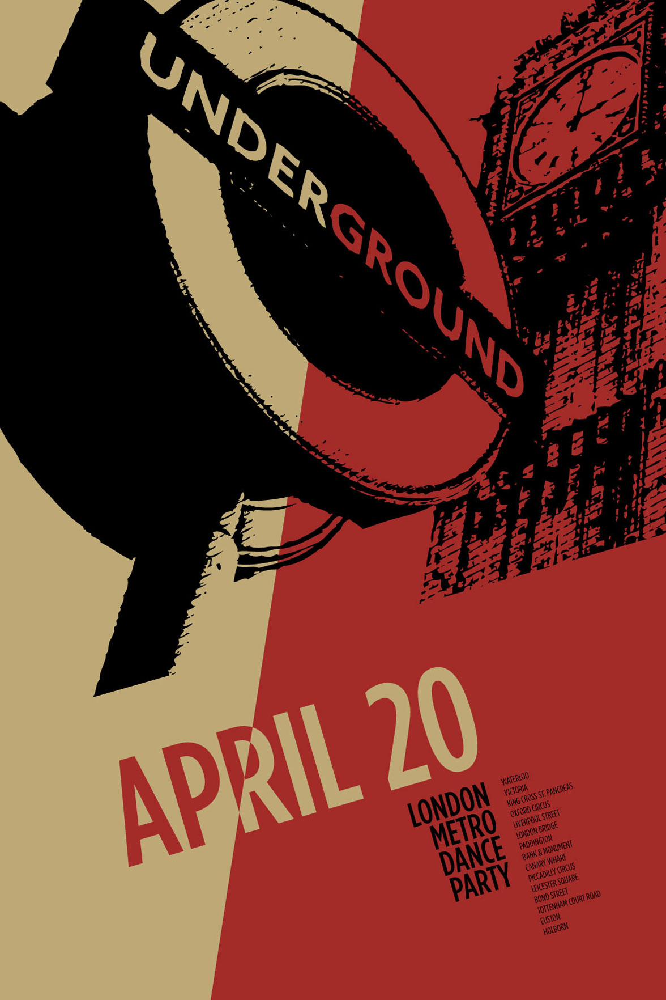

London Metro Dance Party
London Metro Dance Party is a community-themed poster. It was a project where we had to choose a designer of choice and imitate their style. The designer that was chosen was Odermatt & Tissi and their post-modern style. I really liked their use of colors and typography.
Back to Showcase

Back to Showcase